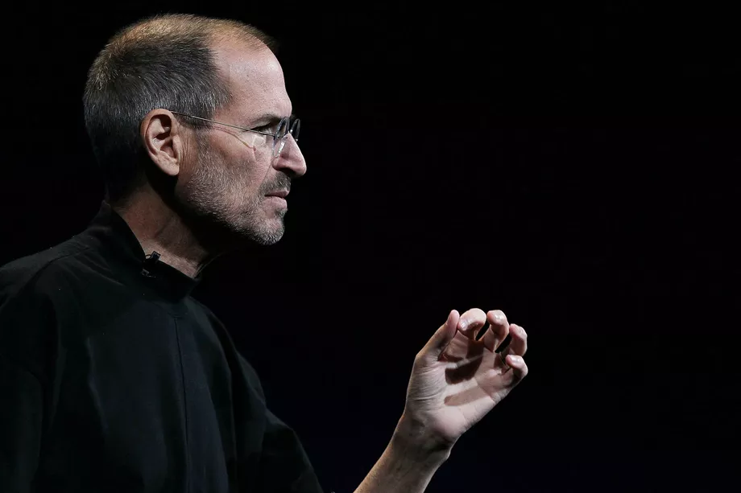

Steve Jobs
An Information Technology Pioneer

Apple Special Event at Yerba Buena Center for the Arts January 27, 2010 in San Francisco, California.
- 1976 - Jobs, Wozniak, and Ronald Wayne founded Apple Computer (now called Apple Inc.) in the garage of Jobs's Los Altos home on Crist Drive
- 1977 - Jobs and Wozniak introduced the Apple II at the West Coast Computer Faire. It was the first consumer product sold by Apple Computer and was one of the first highly successful mass-produced microcomputer products
- 1978 - At age 23, Jobs had his first child, Lisa Brennan
- 1982 - Jobs bought an apartment in Manhattan. Although he never lived there, he spent years renovating it with the help of I. M. Pei. In 2003, he sold it to U2 singer Bono.
- 1984 - Jobs introduced the Macintosh computer
- 1985 - Jobs submitted a letter of resignation to the Apple Board and would go on to become the founder of NeXT Inc.
- 1990 - NeXT workstations were first released and priced at US$9,999
- 1996 - Apple announced that it would by NeXT for $427 million. Steve Jobs returned back to the company that he had cofounded. He would become the de facto chief of the company
- 1998 - The iMac was introduced
- 2001 - The first generation of iPod was released
- 2005 - Jobs responded to criticism of Apple's poor recycling programs for e-waste in the US
- 2006 - Jobs would further expanded Apple's recycling programs to any US customer who buys a new Mac
- 2007 - The first iPhone was released
- 2010 - The first iPad was released
- 2011 - Jobs died at his Palo Alto California home
Being the richest man in the cemetery doesn't matter to me. Going to bed at night saying we've done something wonderful, that's what matters to me - Steve Jobs